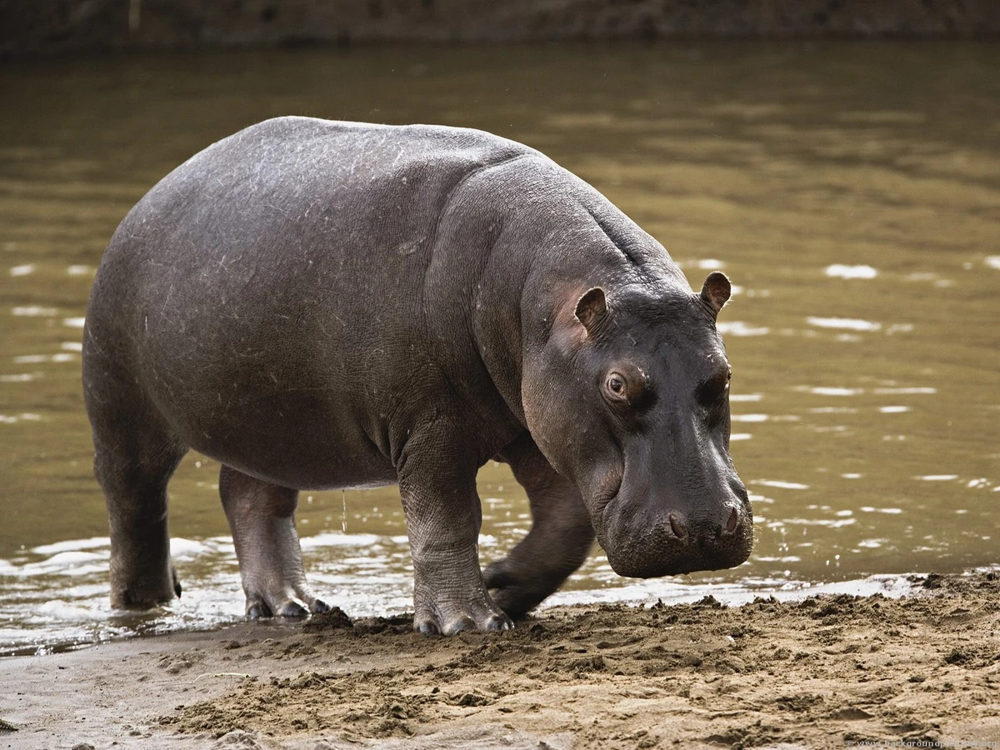

Żywe Kamienie
Żywe Kamienie to niezwykłe stworzenia, które wyglądają jak zwykłe kamienie, ale posiadają zdolność do życia i poruszania się. Są one połączeniem minerału z organicznym materiałem, co nadaje im unikalne cechy. Wygląd Żywego Kamienia jest niezwykle zróżnicowany. Mogą mieć różne kształty i kolory, przypominając kamienie znalezione w naturze. Ich powierzchnia może być gładka, szorstka lub nierówna, a niektóre mogą mieć wzory czy pasy na swojej strukturze. Pomimo że Żywe Kamienie nie mają tradycyjnego układu narządów, posiadają swoje własne sposoby poruszania się i odczuwania otoczenia. Wykorzystując wewnętrzne skomplikowane struktury krystaliczne, są w stanie poruszać się wolno po powierzchni ziemi, przesuwając się z jednego miejsca na drugie. Choć nie posiadają oczu, Żywe Kamienie odbierają światło za pomocą specjalnych czujników, które reagują na zmiany natężenia światła wokół nich. Dzięki temu są w stanie rozpoznawać cień, różnice w intensywności światła oraz reagować na zmiany warunków atmosferycznych. Żywe Kamienie są roślino-podobne, zdolne do fotosyntezy dzięki specjalnym pigmentom zatrzymującym światło słoneczne. Mogą przekształcać energię słoneczną w pokarm, który gromadzą w swojej strukturze krystalicznej. Pomimo swojej pozornie nieruchomej natury, Żywe Kamienie potrafią komunikować się ze sobą za pomocą subtelnych wibracji i emitowania dźwięków. Poprzez te sygnały są w stanie przekazywać informacje o zagrożeniach, źródłach pożywienia i innych istotnych aspektach swojego otoczenia. Żywe Kamienie są rzadkie i tajemnicze. Ich istnienie jest niezwykłym zjawiskiem natury, które fascynuje naukowców i badaczy. Ich unikalność i mistyczne właściwości sprawiają, że są przedmiotem legend i opowieści w różnych kulturach.

Żyrafy
Żyrafy to imponujące ssaki występujące w Afryce, znane ze swojej niezwykłej wysokości i charakterystycznego wyglądu. Są one jednymi z najwyższych zwierząt na lądzie, osiągając przeciętnie od 4,5 do 6 metrów wzrostu, z ich długimi szyjami stanowiącymi większość tej wysokości. Szyja zyrafy jest elastyczna i umożliwia jej sięganie do gałęzi drzew, na których się pasie. Mają długie i mocne nogi, które pozwalają im poruszać się z elegancją i szybkością, osiągając prędkość do 56 km/h. Ich ogon jest długi i sierpowaty.Najbardziej charakterystyczną cechą zyraf jest ich wyjątkowo długa szyja, która pozwala im sięgać po liście i pędy drzew, którymi się żywią. Ich język jest także długi i elastyczny, co ułatwia im zbieranie pokarmu z trudno dostępnych miejsc. Zyrafy są roślinożercami, a ich dieta składa się głównie z liści, pędów i kwiatów drzew, zwłaszcza akacji.Zyrafy mają duże, ekspresyjne oczy i długie, zwisające uszy. Ich futro jest krótkie i gładkie, często o barwie brązowej lub pomarańczowej, z charakterystycznymi ciemnymi plamami lub siatkowatym wzorem, który działa jako doskonałe kamuflaż wśród drzew i traw. Każda zyrafa ma unikalny wzór plam, dzięki czemu można je rozróżnić od siebie. Samce żyraf mają dodatkowo duże guzki na czole i grubsze rogi, zwane "rogiem parzenia". Służą one do rywalizacji w walce o samice podczas sezonu godowego. Żyrafy są zwierzętami społecznymi i żyją w stadach, zazwyczaj składających się z samic i ich młodych potomków. Każde stado ma ustalone hierarchie i relacje społeczne. Żyrafy są zwierzętami spokojnymi i towarzyskimi, często widuje się je wzajemnie wycierające się szyjami w gestach pielęgnacyjnych.
Małpy
Małpy są grupą niesamowicie zróżnicowanych ssaków należących do rzędu naczelnych. Spotykane są na różnych obszarach świata, od tropikalnych lasów deszczowych po suche pustynie. Ich inteligencja, zręczność i ludzkie podobieństwo w zachowaniu czynią je fascynującymi stworzeniami. Małpy charakteryzują się różnorodnymi rozmiarami, od małych małp marmosetek, ważących zaledwie kilka uncji, po większe gatunki jak szympansy i goryle, które mogą osiągać znacznie większe rozmiary. Mają zróżnicowane kształty ciała, od smukłych i gibkich form u małp małych do masywnych i muskularnych ciał u niektórych gatunków małp wielkich. Małpy są znane z ich zwinności i zdolności do poruszania się na drzewach. Mają długie kończyny i chwytny ogon, który pomaga im w utrzymywaniu równowagi podczas skoków i akrobacji na gałęziach. Ich dłonie i stopy są przystosowane do chwytania, umożliwiając im manipulację narzędziami, jak również zbieranie pożywienia i wykonywanie precyzyjnych ruchów. Jedną z charakterystycznych cech małp jest ich zdolność do używania narzędzi. Niektóre gatunki potrafią korzystać z patyków, kamieni czy innych obiektów jako narzędzi, aby zdobyć pożywienie, jak na przykład otwieranie orzechów czy wyławianie owadów z dziupli. Jest to przykład ich inteligencji i zdolności adaptacyjnych. Małpy są również społecznymi istotami, które żyją w grupach o złożonej strukturze społecznej. W większości przypadków obserwuje się hierarchię, gdzie dominujące samce lub samice zajmują ważne pozycje w grupie. Komunikacja w grupie małp odbywa się za pomocą różnorodnych dźwięków, wyrazów twarzy i gestów. W odniesieniu do diety, małpy są bardzo zróżnicowane. Niektóre gatunki są wszystkożerne i jedzą zarówno owoce, liście, nasiona, jak i owady. Inne są przede wszystkim roślinożerne i zjadają liście, pędy, korzenie i kora drzew. Istnieją również gatunki, które spożywają mięso, takie jak małpy drapieżne, które polują na małe ssaki i ptaki.

Lwy
Lwy są majestatycznymi i potężnymi drapieżnikami, które uważane są za jedne z najbardziej ikonicznych zwierząt Afryki. Są one znane ze swojej siły, elegancji i charakterystycznego ryku, który rozbrzmiewa na sawannach. Lwy są największymi członkami rodziny kotowatych, osiągając przeciętnie długość od 1,8 do 2,5 metra i wagę od 150 do 250 kilogramów dla samców, a samice są nieco mniejsze. Mają duże, muskularne ciała z krótkimi nogami, co daje im stabilność podczas polowań i ataków. Charakterystyczną cechą lwa jest jego grzywa, która stanowi swoisty symbol potęgi. Grzywa samców jest gęsta i ciemniejsza, a jej kolor może się różnić od blondu do brązowego lub czarnego. Samice zazwyczaj nie mają grzyw, a ich sierść jest bardziej jednolita i krótsza. Lwy są zwierzętami stadnymi, które żyją w grupach zwanych stadem. Stada liczą zazwyczaj od kilku do kilkunastu osobników, a na ich czele stoi dominujący samiec, zwany lwem. Samce w stadzie są odpowiedzialne za ochronę terytorium i samice, podczas gdy samice zajmują się polowaniem i opieką nad młodymi. Dieta lwów składa się przede wszystkim z mięsa. Są one drapieżnikami i polują na różne gatunki zwierząt, takie jak antylopy, zebry czy bawoły. Lwy są wyjątkowo silne i mają umiejętność przewrócenia nawet dużych zwierząt swoimi potężnymi szczękami. Lwy są również zdolne do rozwinięcia znakomitych technik polowania, takich jak strategiczne podejście do swoich ofiar i wykorzystanie zaskoczenia jako elementu zaskoczenia. Polowanie odbywa się głównie w nocy, kiedy lwy mogą korzystać z cienia i niezauważenie zbliżać się do swoich celów. Pomimo ich groźnego wizerunku, lwy mają również swoją delikatną stronę. W ramach stada lwy okazują sobie czułość i pielęgnację. Mają silne więzi społeczne, które manifestują się w wzajemnym wycieraniu się, przytulaniu i wzmacnianiu relacji.
Hipopotamy
Hipopotamy to imponujące ssaki wodne zamieszkujące rzeki, jeziora i bagna Afryki. Są one jednymi z największych lądowych zwierząt, osiągając przeciętnie długość od 3,5 do 5 metrów i wagę od 1,5 do 4,5 tony. Ich ciała są masywne, z szerokimi, okrągłymi kształtami i krótkimi nogami, które dobrze się sprawdzają w wodzie. Charakterystyczną cechą hipopotamów jest ich potężna głowa, szeroka paszcza, ogromne kły i szeroki uśmiech, który odsłania ich imponujące uzębienie. Ich skóra jest gruba i nieproporcjonalnie wrażliwa na promienie słoneczne, dlatego często są widziane wylegujące się w bagnach lub tonące w wodzie, aby schłodzić swój organizm. Hipopotamy są zwierzętami wodnymi, które spędzają większość czasu w wodzie, aby chronić swoje ciała przed nadmiernym wysychaniem i ochłodzić się w gorących klimatach. Ich ciała są dostosowane do pływania i nurkowania, a ich grube skóry działają jak naturalny pancerz, chroniąc je przed uszkodzeniami i atakami drapieżników. Chociaż hipopotamy spędzają większość swojego czasu w wodzie, są również świetnymi biegaczami. Potrafią osiągnąć prędkość do 30 km/h, co czyni je wystarczająco szybkimi, aby uciec przed zagrożeniem. Ich nogi są krótkie, ale bardzo silne, umożliwiające im poruszanie się po trudnym terenie i przemieszczanie się z łatwością zarówno na lądzie, jak i w wodzie.Hipopotamy są roślinożercami, a ich dieta składa się głównie z trawy. Z powodu swojej olbrzymiej masy ciała, muszą spożywać duże ilości pokarmu, aby utrzymać swoje ciało w dobrej kondycji. Często żerują na pastwiskach w nocy, aby uniknąć gorącego słońca i konkurowania z innymi zwierzętami o pożywienie. Hipopotamy są także znane ze swojego agresywnego zachowania i terytorialności. Samce bronią swoich terenów przed intruzami, groźnie reagując i wystawiając swoje imponujące uzębienie. W przypadku konfliktu hipopotamy potrafią być bardzo niebezpieczne i agresywne.
